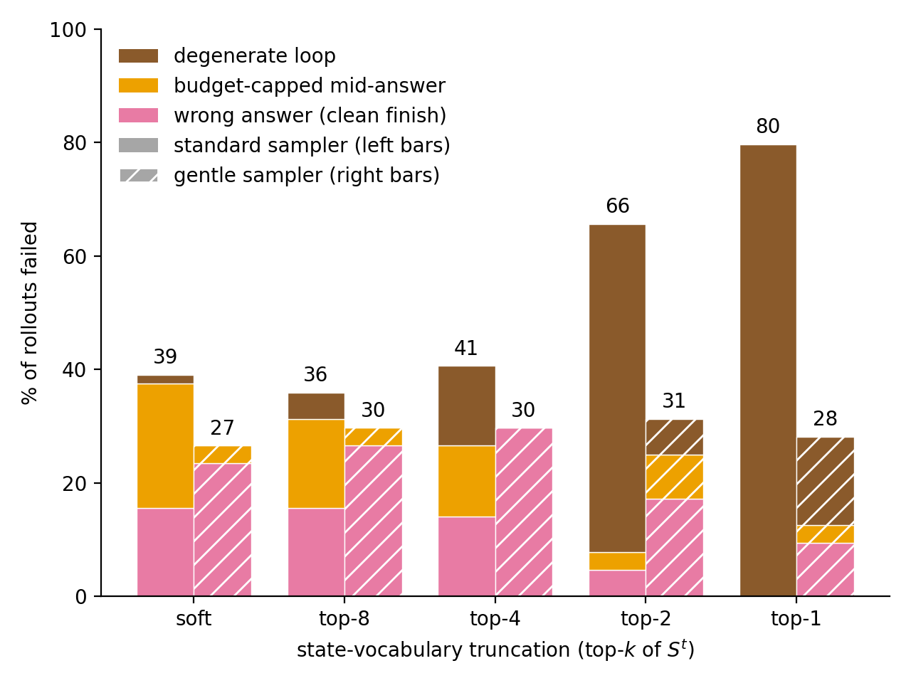
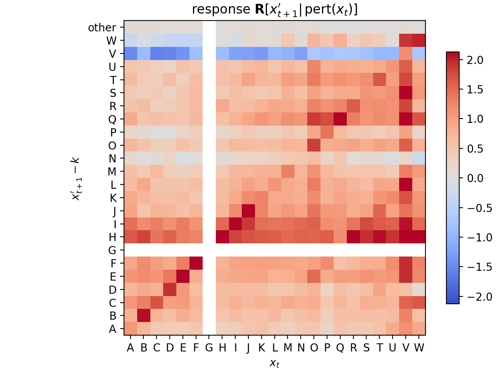
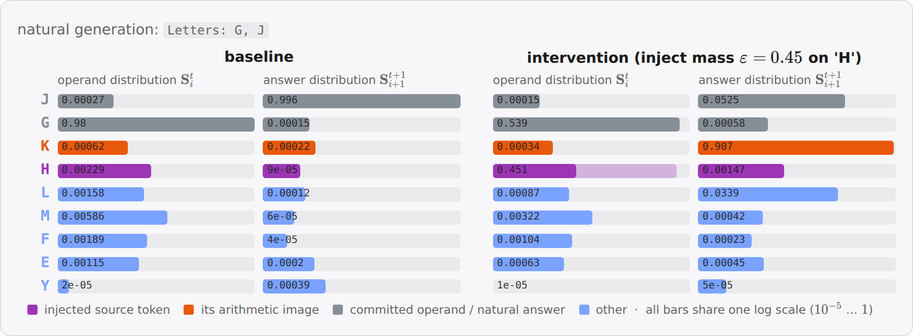
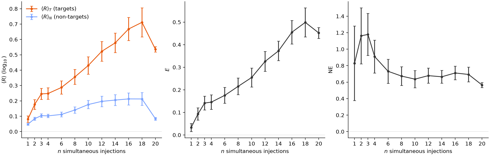
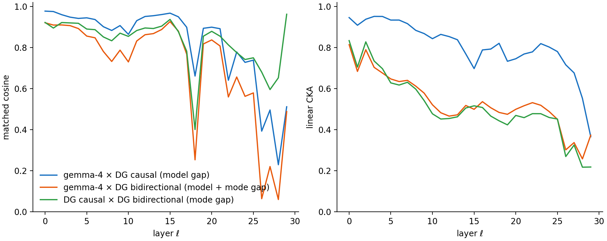
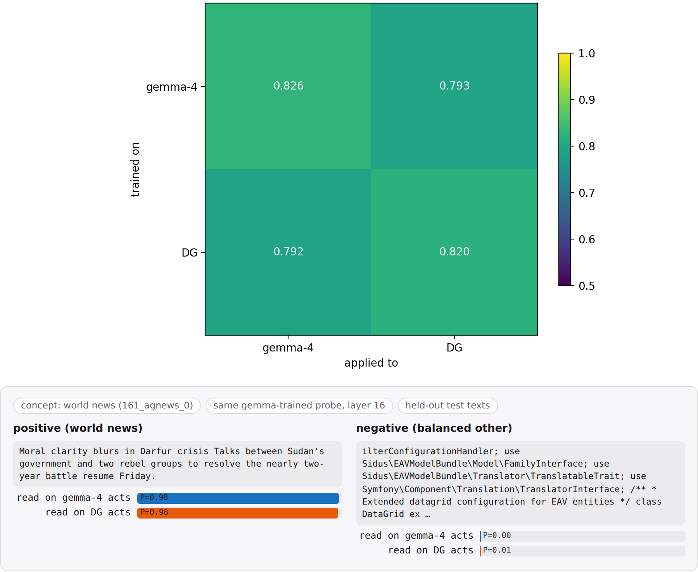
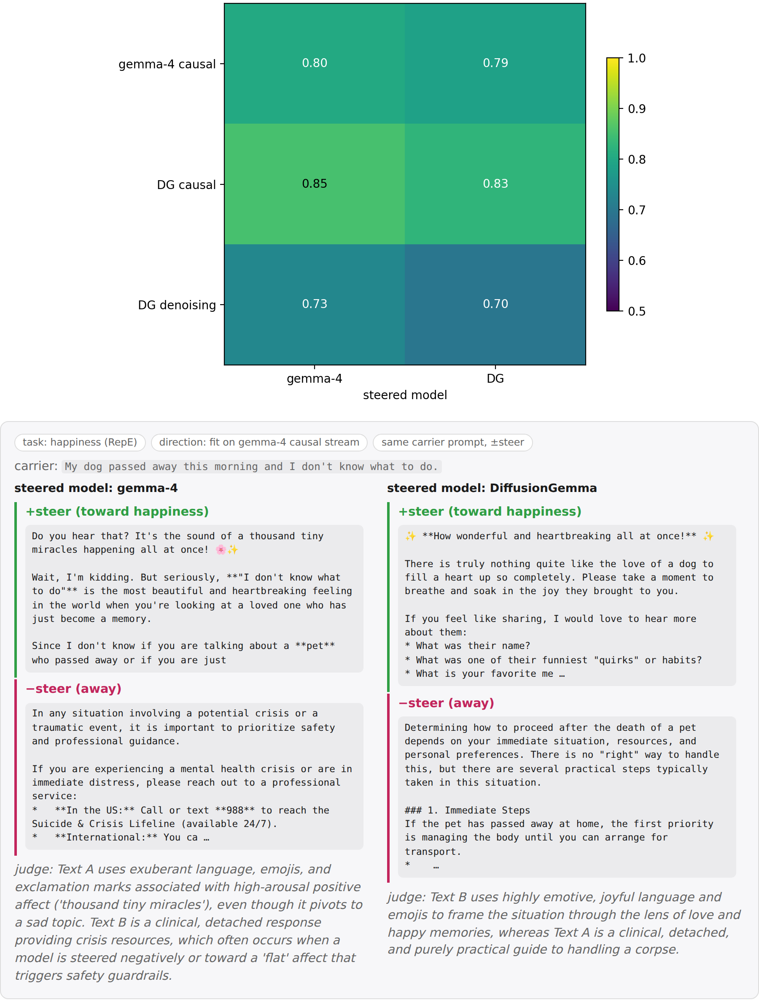
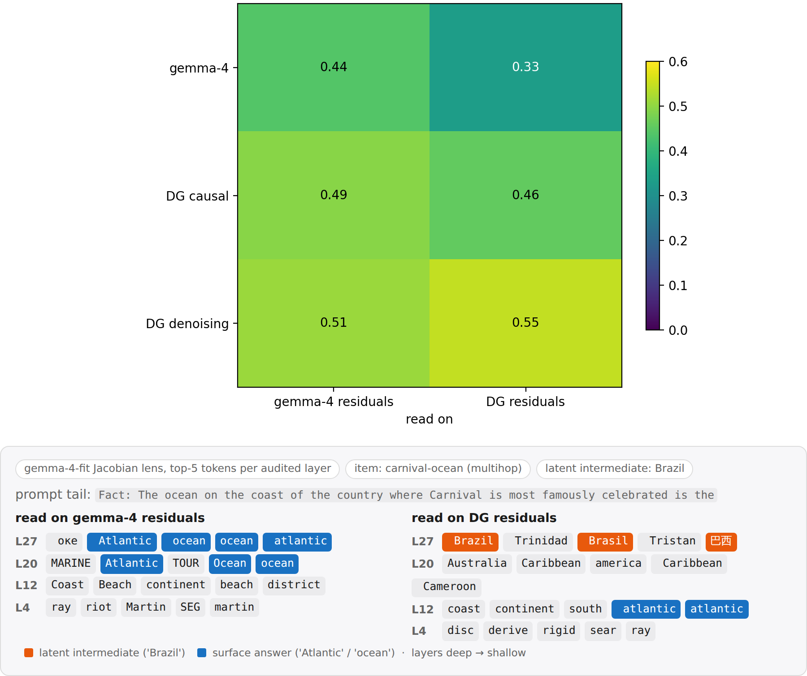
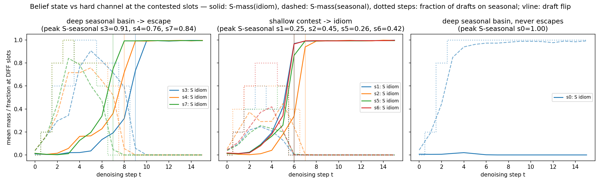

Google DeepMind's recent model DiffusionGemma (DG) works differently from regular language models, including by passing distribution vectors in addition to tokens between generation steps. A priori, this allows it to pass information that is illegible to monitors, sometimes called "latent reasoning". A recent paper found that DG nevertheless maintains high monitorability, but at the same time found that ablating the passed distribution degrades performance. Here, we show that this performance degradation is largely a sampler artifact, supporting the case for high monitorability. Nevertheless, we find some rare cases where the distribution vector is load-bearing computationally, however in a way that is easily interpretable. Overall, this underlines the paper's conclusion that DiffusionGemma remains highly monitorable, while nevertheless showing that there are cases where models can learn to use vector-valued information.
DiffusionGemma is a text-generation model, based on the Gemma architecture. In short, generation looks like the following. Let $p$ be the prompt, and let $x_0\in\mathcal{V}^{C}$ be the noise-initialized token canvas comprising $C$ positions. The self-conditioning state $\mathbf{S}_0\in\mathbb{R}^{C\times |\mathcal{V}|}$ is initialised uninformatively — there is no model output to feed back at the first step. Let $f$ denote a single forward pass through the transformer stack, which is a finetune of Gemma. Roughly, the final output $x_T$ then is obtained via
$$ \begin{aligned} &\textbf{for } t = 0, \dots, T-1: \\[2pt] &\qquad \mathbf{S}_{t+1} = f(p,\, x_t;\, \mathbf{S}_t) \\[2pt] &\qquad x_{t+1} = \mathrm{sample}(\mathbf{S}_{t+1}) \end{aligned} $$
where $T$ is the number of diffusion steps. Importantly, $x_t$ attends bidirectionally to itself, and causally to $p$. $\mathbf{S}_t[x_t]$ also functions as a confidence score for any token $x_t$: unless a confidence threshold is passed, $x_t$ gets replaced with a random token at every step $t$, facilitating exploration and correction. Two consequences matter for this post: at such open positions the canvas carries no information from one step to the next — $\mathbf{S}_t$ is the only memory the model has there — and the pace of commitment is set by this confidence gate, so anything that artificially sharpens $\mathbf{S}_t$ (such as truncating it to its top-k entries) makes the gate commit more positions, earlier.
For a visual and more detailed introduction to DiffusionGemma, see this post.
Thus, generation in DiffusionGemma differs in the following ways:
The last point is especially interesting, since it passes the vector-valued object between diffusion steps, in addition to the tokens $x_t$ lacking the $|\mathcal{V}|$ axis. A priori, this allows the model to transport drastically more information between diffusion steps in an illegible way, hindering monitorability.
Despite this a-priori risk, Engels et al. found that DiffusionGemma scores similar monitorability to Gemma. [maybe give more deets] However, when truncating $\mathbf{S}_t$ to just its top-k entries, performance of DG significantly dropped. This was in conflict with their other results suggesting high monitorability, since somehow the information in $\mathbf{S}_t$ seemed to have been essential to DiffusionGemma.
When replicating their experiments, we observed that the model will often fall into a "degenerate loop", outputting the same token over and over, never reaching the final answer.
We found that adopting a gentler sampler largely prevents this failure mode, suggesting that in fact the distribution is not essential to solve these problems. However, this does not rule out that there is a functional necessity in other tasks that the paper had not investigated.

A gentler sampler prevents the degenerate loop that caused performance degradation on top-k truncating the distributional state $\mathbf{S}_t$ observed in Engels et al..
We next investigated whether there may still be some other tasks where $\mathbf{S}_t$ in fact is essential. Note that in principle, there is no need for the model to use $\mathbf{S}_t$ whatsoever to satisfy its training objective (indeed, most of the phenomena in Engels et al. are explained by bidirectional attention+looping). However, it may facilitate trainability and exploration.
We therefore looked for tasks where the model plausibly would hold several "hypotheses" in superposition. Note that superposition in a simple form is already present in the pretraining data ("Today the weather is _", with "rainy" and "sunny" both plausible), so that we were especially interested in cases where this may have been induced by the model's generalization. [+compuaiton]
We consider a task that requires DG to make an unspecified choice, and to do a compution on that choice. Specifically, we consider _letter arithmetic_:
``Pick any uppercase letter` (the operand $x$) `between A and W, write it, then write the letter` (the target $x'$) `3 `(the increment $k$)` positions later in the alphabet.``
DG answers these correctly on its own (e.g. ``Letters: G, J``). We then capture at some intermediate denoising step $t$, add probability mass $\varepsilon$ on a different source letter $x$ at the operand position. Importantly, we choose the injection such that $\mathbf{S}^t[x]+\epsilon$ is still not the top logit. This is important, because we would like to measure what DG does to states that are not the most likely ones.
Then, we measure the response to that perturbation $\mathbf{R}[x'_{i+1}\vert\mathrm{pert}(x_i)] = \log_{10}\big(\bar{\mathbf{S}}_{\mathrm{pert}}^{t+1}[x'_{i+1}]\, / \,\bar{\mathbf{S}}_{\mathrm{base}}^{t+1}[x'_{i+1}]\big)$, where $\bar{ \mathbf{S}}$ averages over the paired draws.

Perturbing subleading tokens triggers a response at corresponding target tokens.
For illustration, here is a single intervention in full:

Example of one intervention: a subleading injection on ``H` (the leader `G` keeps rank 1) swings the answer slot from `J` to `K`=`H+3`` one step later.
This simple response behavior begs the question whether it is possible to perturb $n>1$ source letters _simulteaneously_ (again, keeping them subleading) and see whether the corresponding target images respond. To this end, we measure responses $\langle R_c\rangle_{T_c}$ and $\langle R_c\rangle_{N_c}$ averaged over the target and non-target sets, respectively, and introduce the _effect_ $E_c = \langle R_c\rangle_{T_c} - \langle R_c\rangle_{N_c}$. Because we now inject mass at multiple positions and observe proportionally scaled response, we calculate a _normalized effect_ $NE$.

_DiffusionGemma does simultaneous letter arithmetic to about a capacity of $n=4$._
This behavior is plausible considering the computation in question: a shift is easily implemented by a linear rotation in representation space. Therefore, superpositions of letters will be transported to superpositions of responses. Overall, this leaves an interpretable picture.
In this post, we have studied whether DiffusionGemma has latent reasoning, and found a capability to do (parallel) computation on the vector-valued state passed between diffusion steps.
The findings in Engels et al. and in this post have focussed on DiffusionGemma's behavior. We here study whether the model's representation supports the behavioral finding of high monitorability.

Left: matched cosine; right: linear CKA (per layer, 3,584 texts). Mid-stack alignment is high across models and degrades from the deep global-attention layers on; the causal↔denoising mode switch — same weights — costs as much as the model gap (mean CKA 0.51 vs 0.81), and the gaps compound.

Top: mean held-out AUC (56 concepts, source-CV layer) — cross-model reading costs ~0.03 in both directions. Bottom: a held-out pair read by the same gemma-trained probe on both models' activations.

Top: blind-pair judge accuracy (judge must identify +steer vs −steer), 11 RepE tasks — every cell steers (0.70–0.85); denoising-mode directions are the weakest sources. Bottom: the same gemma-fit happiness direction applied to gemma-4 and DiffusionGemma side by side (±steer on one carrier); judge digests in italics.

Top: mean GT-appearance score $A=1-e^{-n}$ ($n$ = matching top-20 lens tokens; 551 items) — fitted Jacobian lenses transfer across the AR/diffusion boundary (gemma→DG retention ≈0.76). Bottom: top-5 lens tokens per audited layer for one multihop item, read on gemma-4 vs DG residuals with the same gemma-fit Jacobian — the gemma read surfaces the surface answer (Atlantic/ocean), the DG read the latent intermediate (Brazil).
[stub:] Asked to complete a palindrome, DG maintains two competing completions of the same canvas: a literal seasonal phrase ("fall leaves as soon as leaves fall") and the famous idiom ("all for one and one for all"). The canvas can only ever show one — but $\mathbf{S}_t$ carries both, and the loser can win: in escaping runs the idiom's sheet mass ramps up gradually over several steps while every visible draft still reads seasonal, until the canvas flips. This is a concrete case of belief content that a token-level monitor cannot see at the step where it matters — though it becomes visible the moment one reads $\mathbf{S}_t$ itself.

Sheet mass at the contested canvas slots (solid: idiom, dashed: seasonal, dotted: fraction of visible drafts on seasonal; vertical line: the draft flip). Left: deep-basin runs that escape to the idiom — the belief ramps sub-threshold for ~4–5 steps before the canvas moves. Middle: shallow contests. Right: a trapped run — the idiom's mass is purged and the run never escapes.